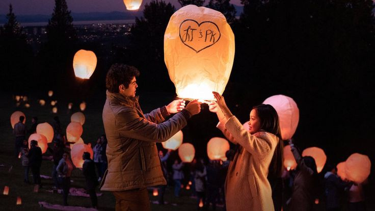
নিয়ে আমি প্রতিবার অনেক moja করি। লাফালাফি বলতে আমার মন লাফালাফি করে, মন ভালো থাকে নভেম্বর ঢুকলেই। তারপর কবে ২১ তারিখ আসবে সে নিয়ে হাপিত্যেশ করি। কিন্তু জন্মদিনের দিন আমার মন খারাপ হয়ে যায় ছোট্ট ছোট্ট কারণে। হয়তো ভেজা গামছা শুকোতে দেয়া হয়নি, আমার রাগ লাগে, মন খারাপ হয়। আবার হয়তো কেউ গান শুনছে, তার শব্দ আমি শুনছি,তখন মন খারাপ হয়ে যায়।
তবে জন্মদিনে আমি অনেক অনেক ভালোবাসা পাই। অপ্রত্যাশিত ভালোবাসা। এত্তো চিঠি পেয়েছি,চিরকুট পেয়েছি।সবাই কতো সুন্দর করে কথা লিখে পাঠিয়েছে! বই,শাড়ি পেয়েছি। ভীষণ সুন্দর একটা কেক পেয়েছি-আকাশ, সমুদ্র, মেঘ সব যেনো বক্সে বাঁধা। সোনাদিয়া থেকে ঘাসফুল এসেছে আর ঝিনুকের খোল এসেছে। বোনের পকেটমানি শেষ হয়েছে। জিলিপি আর একগাদা আইস্ক্রিম খেয়েছি,অনেকদিন ধরে তারাবাতি জ্বালানোর শখ, তাও হয়েছে।
আঁখি আপু পায়েস করে পাঠিয়েছে, আবার ওনার ছেলেরা ঘটা করে আইস্ক্রিম কেক আর চকোলেট এনেছে -নিজেরাই খেয়ে
ফেলেছে।
আমার ঘরের জন্য মন খারাপ। রাধাচূড়া গাছের সীম খানা ছুঁয়ে দিয়ে ইচ্ছে হচ্ছে। ছাদে মাদুর
বিছিয়ে সারাদিন ওতেই অলস ভাবে কাটাতে মন চাচ্ছে।
But i believe in “arrange whatever pieces come
your way”. তাই আমার শান্তির ঘরের কথা থাক- এইযে ছোট্ট ছাদে রাতে বসে এসব লিখছি- ঠান্ডা বাতাস মনকেও
নাড়া দিচ্ছে, এই-ই ভালো। এতেই সুখ।
নানুর বাড়ির দুটো জিনিস আমার ভীষণ পছন্দের। এক হলো বিশাল জায়গা, একপাশে ঘর,মস্ত উঠোন আর একগাদা গাছ। বসার একটা জায়গা আছে বাসার সামনে, অনেকটা ব্যালকনির মতো-তবে পিচ্ছিপাচ্চা না। আকাশ দেখা যায়-বৃষ্টি অনেক সুন্দর। তারচেয়ে বেশি সুন্দর সামনের এই রাধাচূড়া গাছটি। বৃষ্টি বা শীতের দিনে মনে হয় আমি এই গাছের দিকে তাকিয়ে এই দোলনায় বসে সারাজীবন কাটাতে পারবো। গাছের মধ্যে আবার বিশাল একটা কদম গাছও আছে। সে গাছ থেকে ফুল পাড়া হয়না,এতো উঁচু বলে।নানু ভয়ে কাউকে উঠতে দেয়না। তবে মাঝেমধ্যে কিছু কদম নিচে পাওয়া যায়,হয়তো পাখিতে ফেলে। সে নিয়ে আমরা ছুটোছুটি করি,আইবা হাতে নিতে বায়না করবে, নিয়ে দুমিনিটের মাথায় ছিঁড়ে ফেলবে।
এতো কথার কারণ হলো প্রায় ৪ থেকে ৫ মাস আগে আমি নানুদের রাধাচূড়া বীজ নিয়ে আমাদের ছাদে লাগিয়েছিলাম। সে
গাছে নাকি ফুল হয়েছে,লম্বা একটা সীম হয়েছে। অথচ আমি দেখতে পেলাম না,ছুঁয়ে দিতে পারলাম না, এর গন্ধ নিতে
পারলাম না। আমার চূড়া গাছের ফুলের প্রথম আমি দেখলামনা।আমার মন খারাপ,প্রচন্ড রকম খারাপ।
১২.১১.২০২১
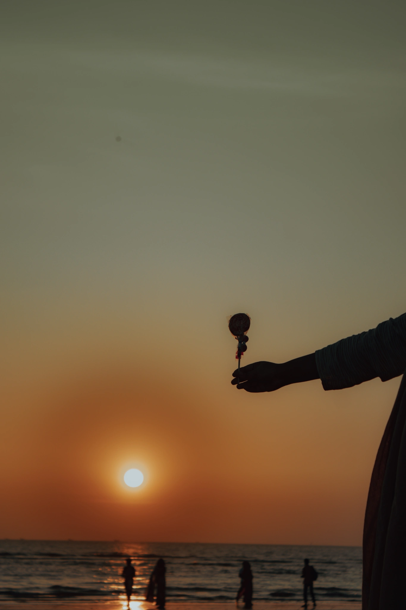
দুখানা ঘটনা-সাধারণ। কিন্তু আমার কাছে কতো আপন! অনেক আগে থেকে সুখ খুঁজে নিতে শিখেছি চারপাশ থেকে। যা কিছু ছোট, কিন্তু মনকে শান্তি দেয়, আঁকড়ে নিজের কাছে রাখতে শিখেছি। আমার স্কুল আর কলেজের কিছু ঘটনা মনে আসছে এখন। বেশিরভাগ ছেলে খ্যাত বলতো, চুল বাঁধতাম না, যেমনি তেমনি করে মাথায় কাপড় দিতাম,সুন্দর করে সাজতাম না,কথা বলতাম না-বা আসলে ওদের বলার বিষয় আমাকে টানতোনা। বছর দুয়েক আগে জায়গা হয়েছে কথা বলার, কেউ খ্যাত বললে তাকে জবাব দেয়ার গলা হয়েছে,সুন্দর মানুষের সাথে দেখা হয়েছে, নিজেকে ভালোবাসতে শেখা হয়েছে।
ঘাসফুল, আলো, বই, রাস্তায় ঝরা পাতা, বাগানবিলাসের ঝাড়, বা সুন্দর আকাশ সবে শান্তি। সবে আমি, মায়া,আর টুকরো ভালোবাসা।
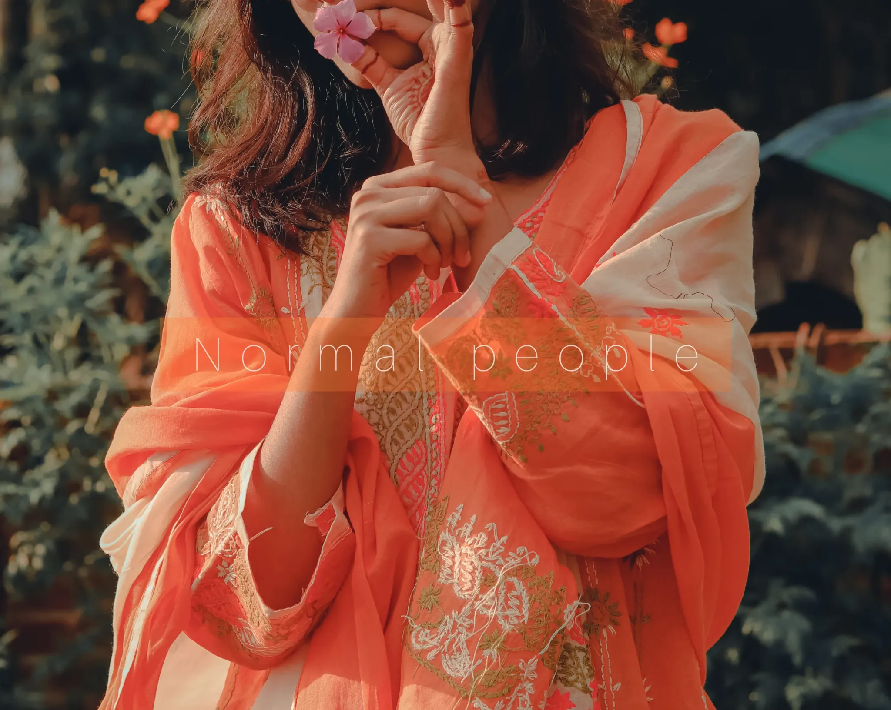
∆Normal people by Sally Rooney.
There was a time when most of my favorite people
from here were talking about this book. And finally,I picked it up last week and again yesterday.
both times i said to myself i didn’t like the book. The book got too real for me, too raw, that’s
it. and some people can’t handle the intensity some writings provide. The words, the feelings hit
like arrows on the heart. And I don’t like wounds in my heart. Cause I come to fiction for sunshine,
when life gets too real. And this book made me watch “how I met your mother” – cause even though I
love friends and the big bang theory, nothing makes me laugh more than this, also I am in a big
slump. Cause I am consumed by sadness and I can’t seem to concentrate on anything.
From the book
I didn’t like Connell. he creeped me out. Maybe it had to do with something the fact that he was an
ass to Marianne at the beginning. The situation changed, we got to know them more closely, together
and separately. Still hate the guy!!
The story may seem like a simple story, but there is an
intense feeling in it and you can’t shake the feeling of reality. Some story gets too real, may even
sync with what you are feeling this is one of those books for me.
—
“What they have now they
can never have back again. But for her the pain of loneliness will be nothing to the pain that she
used to feel, of being unworthy. He brought her goodness like a gift and now it belongs to her.
Meanwhile, his life opens out before him in all directions at once. They’ve done a lot of good for
each other. She thinks. People can change one another.”
Also, there are mentions of some books, definitely going to read them.
I feel every book I read. I feel the pain, joy, emotions, relationship, words- everything. Another book that hit so close to home is “The heart principal”. The book itself is was too relatable, to the life I am leading.
Have you ever thought if you become “you” in front of others they won’t accept you?
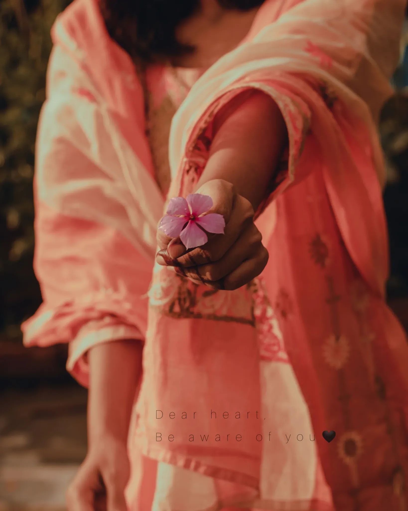
I have so many things to say about this one. But it seems like I can’t write what I feel. I had so
many things on my head while I was reading it. good things, bad things, anger, adoration. That’s
what we want from a book right? To speak to us? To make us feel?
When I love a book, I want it to
end soon. Hear me out, I have a good reason. If it’s a romance book there is going to be a hard
fallout between the protagonists, before everything is in place. And that stage makes me miserable.
I can’t bear the life journey the author put us through along with the characters. I know it sounds
silly, but it seems to make me tear up, more often than I would like to admit. And yes, I
practically sobbed while I was reading the book. My heart broke for Anna, for Quan. And I am still
angry with Priscilla. I have so many things to say about Anna, about Quan and Anna’s sister,
Priscilla. But one thing I can say now, I don’t want to be like Priscilla. She is a different
person, I get it – but the way she tends to judge people with her life scale physically hurt me
while I was reading. The interaction between the two sisters was one of the most heartbreaking
things I have ever read.
I get it. I know where Anna is coming from. When you are too attached to your family you can’t do so many things, that might make them upset, even most of the time, saying what’s on your mind seems to be too much. I think the brown household kids get it more than anyone else in the world. As most of them are like puppets being controlled by the family. And no matter what others say, it’s not easy to ignore. Some would suggest to snap out of it and just do it. But most of the time you don’t have the energy or willpower to fight with the family, even for the right reasons.
“Stop judging me.
Accept me.”
—
°cute romance – check
°amazing
protagonists-check
°emotions – check
°tears- check
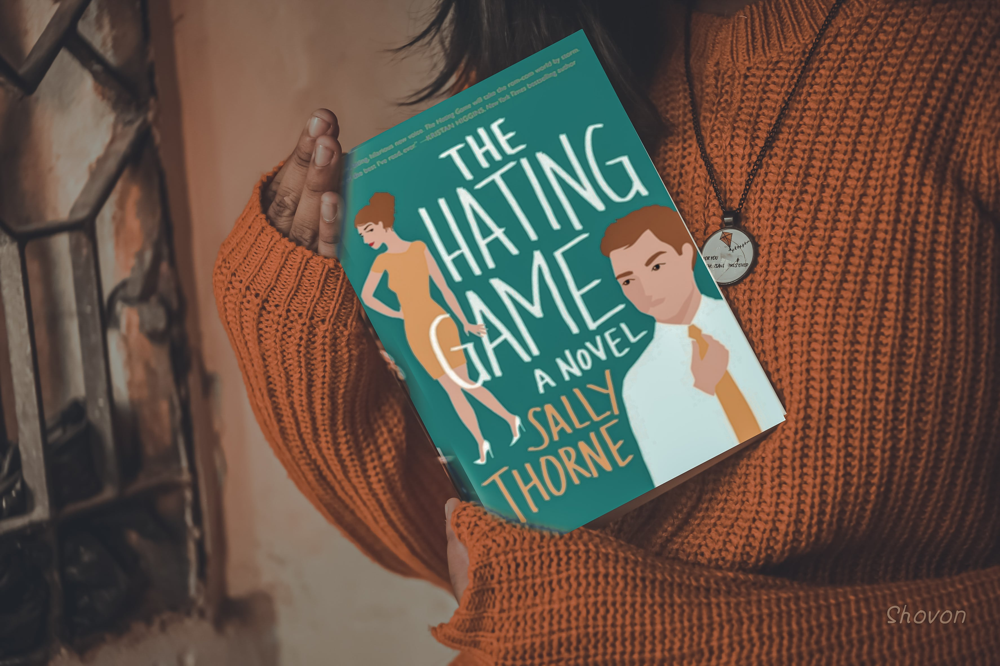
Any tv adoption you are excited about?
I am really excited to watch ‘The hating game’. Also, movie
adoption of @lyssakayadams ‘s book is gonna be on screen soon(hopefully this year) and I want to see
that one. As it’s my favorite series.
#bookreview
*The hating game
*★★★★
I love the
plots where nemesis becomes lovers. I had zero expectations from this book, as I didn’t like the
first book I read of this author. And the reason I picked it up was the movie adoption.
Two
people, who supposedly hate each other, have to sit in front of each other almost every day, 9 to 5,
Lucy and Joshua( also can I tell you how much I love this name! Sounds sexy to me). According to
Lucy, Josh is arrogant, mean, rude (also an eye candy). Even though she is nice to everybody she
doesn’t spare her niceness for him. they’ve become entrenched in an addictive, ridiculous
never-ending game of one-upmanship. There’s the Staring Game. The Mirror Game. The HR Game. Lucy
can’t let Joshua beat her at anything—especially when a huge new promotion goes up for the taking.
Everything was ok until the perfectly innocent elevator ride ends with an earth-shattering kiss,
Lucy starts to wonder whether she’s got Joshua Templeman all wrong. Now that emotion is on the way,
what game they are supposed to play?
My thoughts: This is one of my favorite contemporary romance
read of this year! You have no idea how much I loved the idea of office romance. But I wanted to
know what was on Josh’s mind. So, Josh’s pov would have been a nice addition. Also, new boyfriend
alert!!! i love Josh with all my heart(i even named a diary after him).
The book was the perfect
balance of fun, drama, romance, and banter. Which btw cracked me up every time. Also, slowly falling
in love, is the best part for me in a book, you see I am a hopeless romantic.
If you are looking
for a fun, short summer read, this will do.
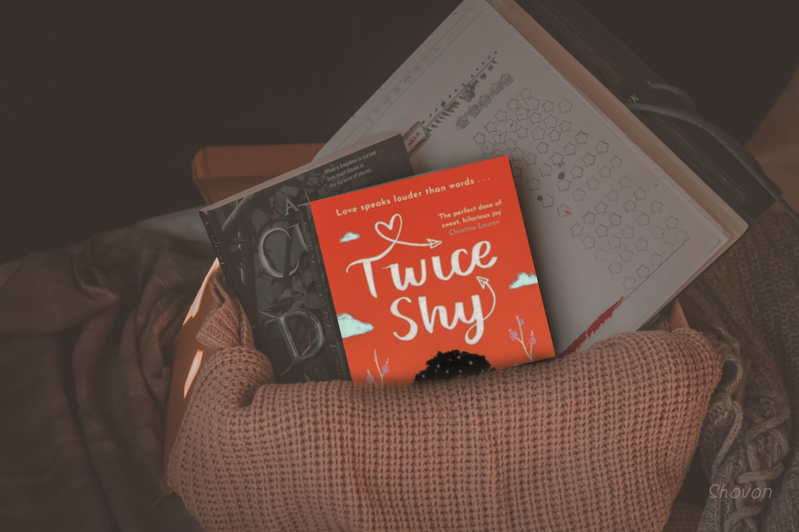
This is it! the author is on my auto-buy list.
Before diving into the book thoughts i want to say
one thing-it may come as a spoiler, but it’s not that bad.
In romance books, you wait for the
other shoe to drop. Someone to mess up, before everything is bubbly and amazing. Well, that
stereotype was nowhere to be found here. And it was AAMAZING, emphasis on AA.
Book rant: Maybell
Parish has always been a dreamer and a hopeless romantic. But life hasn’t been easy for her. Also,
people tend to take advantage of her niceness. She understands that but has zero courage to face it,
so she takes people’s crap. So, when she finds out she inherited a charming house in the Smokies
from her Great-Aunt Violet, she seizes the opportunity to make a fresh start.
But it seems like
the past doesn’t want to part with her. Because she is not the only one who inherited the property
and Jack/ Wesley Koehler, the groundskeeper who’s as grouchy as he is gorgeous who inherited half —
turns out he has a very different vision for the property’s future. How is this going to work then?
Well, you have to read the book to find out.
Book thought: I LOVE IT,’CHEFF KISS😘’. Even though
i love the books with two povs (i want to know what’s happening in both protagonist’s heads),i
didn’t miss Wesley’s pov. The book is a chocolate Ice-cream, with chocolate chips, chocolate chunks,
a bit of coffee essence, roasted hazelnuts, and a bit of maple syrup. Basically, it has everything.
I love the fact that how the author gave us Wesley. Not rough and tough, nothing can get to him-sort
of male, but with actual real human(he felt real, cause when i get nervous in front of people,i say
something stupid or something means). His social anxiety didn’t make his life easy either. And the
way he coped was something to admire about.
I am a sucker for the slow burn. and trust me, this
was a perfect definition of that. also, the author nailed it, she didn’t give unnecessary drama(i
know i love drama, but never between the protagonists, as i am a hopeless romantic, and i will have
a panic attack if there is something wrong, or i throw the book). Also,i really love the plot, the
excitement of building something new i felt that. I felt the dreams and the characters.
That
reminds me,i really want this as a movie,starring Justine Baldoni and Blake Lively. I have no idea
why i thought about them while i was reading this book.
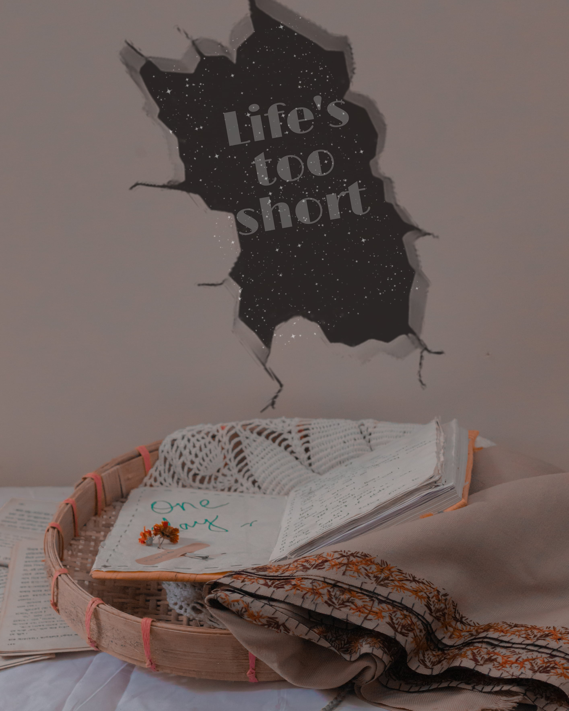
Is love enough?
I have never had that OMG!sort of love, i don’t even think i have gotten love
unconditionally. Not that I am craving or so. It’s just some stories that make you want to have that
sort of love.
Book:Life’s too short
Trigger warning: ALS, abandonment, addiction,
grief.
The story introduces us to Vanessa Price who may or may not have ALS. As most of the women
of her Mom’s side family carried the condition. So she isn’t willing to waste a moment or miss out
on an experience when she has no idea whether she shares the same fatal genetic condition. So she
lives to the fullest like every day is the last day. She is a popular travel vlogger, she is famous
and has millions of admirers. Everything was almost as she wanted, but after her half-sister
suddenly leaves Vanessa the custody of her infant daughter, she is housebound, on mommy duty for the
foreseeable future, and feeling totally out of her element. The last person she expects to show up
offering help is the unbelievably hot lawyer who lives next door, Adrian(hot name, right?) Copeland.
Slowly they get close, but Vanessa doesn’t date. She thinks that her carefree ways and his need for
a structured plan could never be compatible for the long term. So, will there be more? Or they will
just be friends?
Thoughts: You know some books make you so frustrated that you throw them, then
pick it up and read it. This was one of them. I did throw books before, but couldn’t throw this one,
as i was reading epub-my phone is already broken,i can’t afford to throw it.I loved Vanessa, at
least at the beginning. She was wonderful. But she was assuming that she will die at 30, and she
lived by that, treated others like that which made me sooo angry! It was like -i am not gonna go to
the road, cause i can have an accident and die. It was really annoying after some time. It took away
the perfect flow from the book, for me. If you die, you die. You can die right now, it’s not a thing
you can put an ultimatum to.
But, the story was lovely. It had a perfect amount of every emotion.
I loved Adrian(still do-book boyfriend alert).
I am reviewing the 3rd book of this series😀😀
Cause i loved this one the most. You get to meet Adrian in book two too and loved him there too.
Glad that he has his own book.
The book showed some family problems, and i loved those, cause
they felt real and the way the author dealt with them, was amazing.
Also, the way Vanessa and
Adrian’s relationship grew felt so real. And i love slow-burn romance. They both had their fair
share of chaos. But their chaoses seemed to faltered when they were together.
This is one of the
best contemporary romances i read so far. If you are looking for something fun also sull of
emotions, try this one❤️
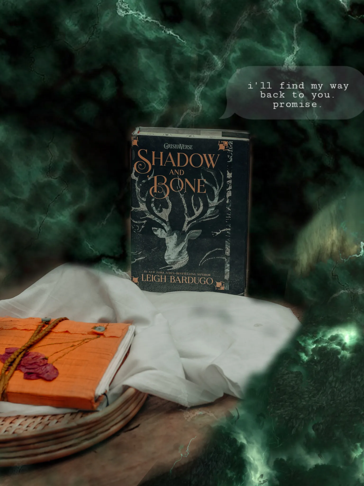
Have you watched Shadow and bone yet?? Who is your favorite??
If you haven’t and planning to watch
the show, i can ignore the post -cause i will rant a lot about the show.
I had really high hopes
when Netflix announced the show. I loved the book. And i haven’t expected them to exceed those
expectations, but heads off to the scriptwriters who mixed ‘shadow and bone’ and SOC! I haven’t read
SOC, but i am already a fan of the crows.
As the screen comes to life we see our very own Alina
Starkov and Mal. I don’t know why people try to ship #DARKLINA. They don’t make sense to me. Not
even in the book🙊. Don’t get me wrong, i love Darkling. Just he was not for Alina.
I Didn’t like
him in the 1st book, but i loved him from 2nd and 3rd books. i can see his reasoning for what he
became. I can understand the reasons behind his ruthlessness. And somehow it made sense to me.
Because the world is hard and others will always try to put you down if they see you are rising or
even a tad bit different. But there is a fine line between trying to protect and become obsessing
with power to secure a future. He was out for retribution. But Darkling crossed the line. And he
became the villain of everyone’s story. Even though I knew what he was, I was drooling all over him
when he came to screen, so I guess Alina was right to fall into his love trap.
#Malina on the
other hand has my heart. My heart dances when they interact. And i watched every scene of them like
a volcra trying to find food.
Moments:
Mal: i’ll find my way back to you. Promise. You are my
true north.
Alina: you have always been my true North, Mal.
How can these not melt your heart! “When I was young, I was afraid of the dark. When I got older, I
found out the dark is a place that is full of monsters,” Alina says in voice-over. Jessie is the
best Alina!! She brought the character to life.
Also, Archie is a great Mal!
Every character!
Every scene!it seems like i can’t get enough of them.
Please drop the season 2 soon.
Want to
see Kaz’s full form and more of Kaz and Inej. Also, Jesper cracks me up every time he comes to the
screen.
When i read the book I found general Kirigan way too intimidating and scary. Ben barns
did a good job but somehow i wasn’t intimated or scared by him at all. I blame his handsome
face🙊🙊
And then there is Nina and Matthias! how cute are those two! Matthias accent! God! he
has an accent that can make your heart dance on its own. He can make my heart beat faster! and he is
not even a heartrender.
Netflix perfectly mended two series in one show. Unconditionally it will
be one of the best shows this year.
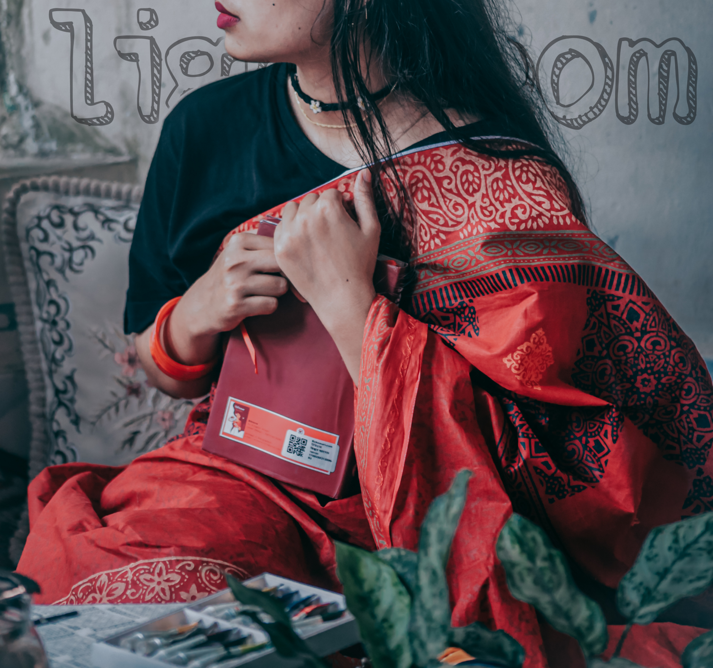
What's the most tiring question you get?
Mine will be 'what filter you use' or 'what app do you use'. They are tiring cause I have talked about the apps I use like 100 times. But I get it, I do. when you join a book community or photo community, you see so much and get overwhelmed and excited and you just ask questions( trust me I did that too, later I realized some of them were not ok). And you want to create too and you see no harm in asking questions. But, most creators put a lot of things on their stories and highlights. Check those. Cause if you are genuinely interested you will do that anyway.
And for my edits, I use lightroom and picsart. Lightroom is one of the best apps there is for photo editing(phone and PC both). You know, photography is like the ocean. If you can find a seashore you can chill with a coconut. And my seashore is adobe lightroom.
Why?
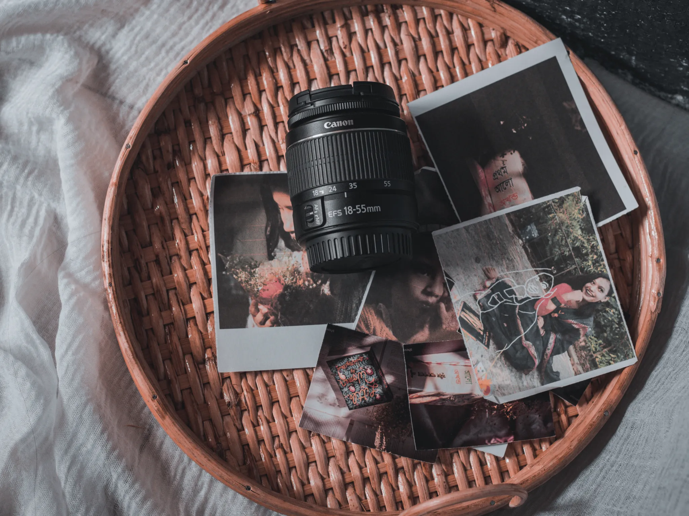
I mean come on, you can edit like a professional, so many options and it's pretty cool. You can experiment as much as you want. The app is like your canvas and each feature is like your color.
Where?
You can download this free from the play store. There are some features locked though. DM me your email to get the app with all features (it will expire soon though).
What features i useঃ
*Crop: to get the right photo size. rotate and flip.
*Profiles: here there are some filters. you can use them if they fit your photos. But maybe try to make your own filter? Cause creating is fun, right?
Light: You can fix your photo exposure, contrast, highlights, shadow, white and black. The curve is a tricky part though. I still struggle with this to find the right tone. But practice and experiment will get you a hang of it.
*Color: i love the color part. It changes the whole photo vibe! And you will change the temp(temperature), tint, vibrance, and saturation as your photo style. To fix your photo color individually, you can go to 'Mix'.
And there is color grading, which i find pretty intimidating. I mean, even after two years i still struggle with it, and trust it's hella tricky as it seems. Overdoing it can ruin your photo, but experiment with it, eventually, you will find the right tone.
*Effects: you can enhance or decrease your photo 'texture' which gives you fine details or hide details. The same goes for the 'clarity' which makes the subject and objects of your photo more stand out. 'Dahaze' removes or add haze to your photo. Basically, it helps to expose underexpose photos and vice versa. I always increase it to get the nice darky-moody vibe.
'Vignette' helps you darken or brighten around the edges. Also, you can add grain amount from here.
*Details: i rarely use this, cause my photo problems to get solved before i come to this feature.
*Presets: whatever features you used to edit your photo, you Don't need to repeat it next time. You save that as a preset and use that to the next photo (or in any photo if it fits).
Go on the top right on your phone and tap the 3 dots and you will see create preset. Click there to name your preset. Slide to the next photo, go to presets feature and on user presets you will get your own filter.
Congratulations, you just created something for you and only you know how you did that❤️
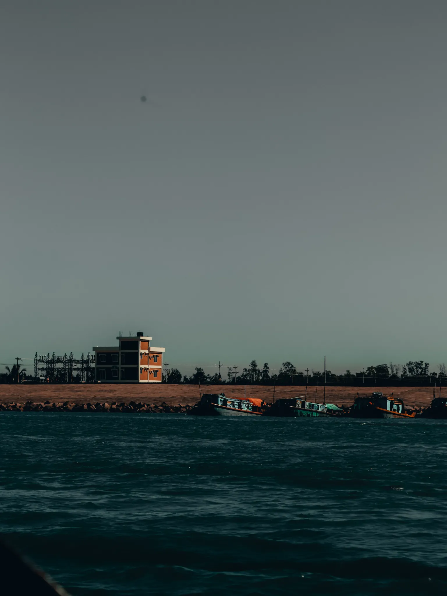
#Toalltheboysi'velovedbefore
Have you watched the last movie of the TATBIlb series???
Who is your favorite character??
For me, it's PK and Kitty! I wish i had a sister like her!
I have a soft spot for this series. Both for the books and the movies. They are my comfort watch. If i am having a bad day this series will be my first choice! Maybe also because i love cheesy romance, the dating part, holding hand part.
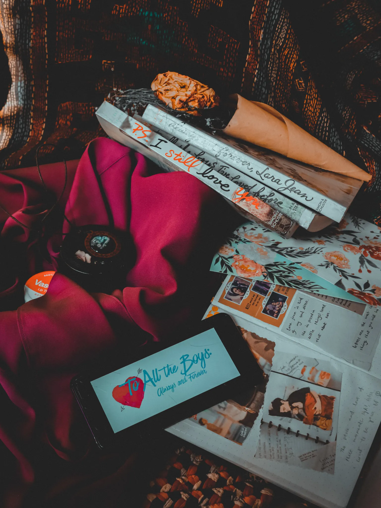
I found out about the series in a booktube maybe… But i do remember one thing that these were my first English book mail. And i read them three (maybe more) times. Heard the audiobooks multiple times. And when the first movie came out i was over the moon!i fall in love with every character! And do i even need to talk about Peter Kavinsky! He is the perfect book boyfriend! The movie gives you a face to put on your book characters and i think it helps a lot to visualize the book while you read them. And also my imagination knows no bounds, and i can practically see the characters acting in front of me while i read the book.
The movie is like chocolate Ice-cream over a soft Brownie with lots of chocolate chips with nut chocolate chunks with caramel (in case you are wondering, that's my favorite dessert! I know it sounds a lot of work-but when you actually arrange them on a bowl with some berries and strawberries -it's the best comfort food in the world with lots of curbs).
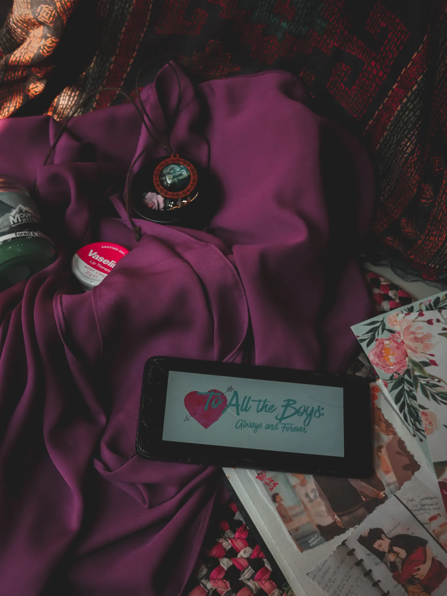
Even though i find Lara Jean a little annoying for some reasons. She started to piss me off from the second book.
Noah, who played Peter in the movies -i think he has done justice to the PK character and so has Lana! They pulled off the characters perfectly. And can anyone get me a room like Lara Jean, please!! The costumes of the movies are amazing.
Though when the 2nd movie came last year and i watched it-i got a little bit disappointed. It was a rush kind of! And the only character that touched my heart was John Ambrose (i hated him in the book btw).
But this 3rd movie satisfied my heart!i mean, nothing can beat the book romance -but still, i am crying over all these cute scenes!! and i really love the playlist!i like kpop-(but i am not FAN kind of person, but i do like to listen to them), and this movie gave me some good ones to listen to. And i love the theme song!
Even though i feel like the movie could have been a bit longer (like 10 mins more maybe?? add more scenes from the book, i guess), but i will give the movie 4.5 stars for the romance and cheesiness.
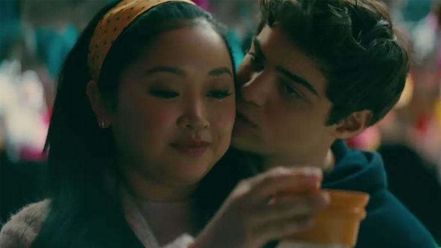
"Life is beautiful and messy and never goes according to plan. I do know that love, real love, is choosing each other through all of it, every single day. Beginning and middle and end."
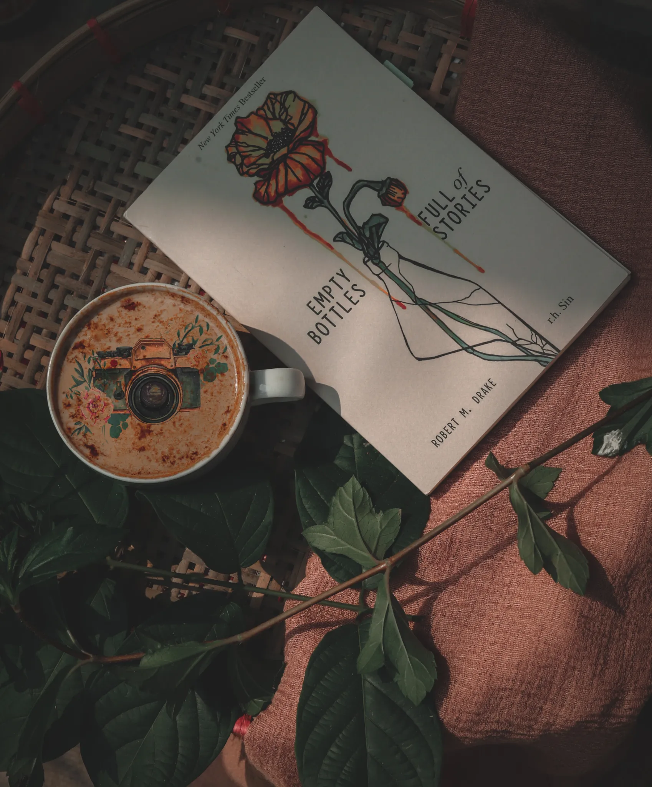
I always had a passion for books and photography. Two years ago I discovered the bookstagram community. Since I learned a lot about photography. And still my favourite subject is books. I love creating contents about books.Here is some things i follow:
ⒻⓇⒺⒺ ⓅⓇⓄⓅⓈ ⒻⓄⓇ ⓂⓎ ⓅⒽⓄⓉⓄⓈ::
°I am a junk hoarder. Old envelopes, brown paper bag,old cd, cassette -i hold onto everything. Whenever i go to my village home,i end up searching for old things-and those never disappoint me.
°Flowers- specially wild ones-i love them, love the fact that flowers bring life to a photo.. Even the dry leaves look amazing at photos♥♥
°My sissy is my free prop😂free model. I love how she is comfortable in front of camera.
°We all have mugs at our houses. And they are my favourite to use. I also love to add text or latte art using picsart.
°If i see a place,which will look great in camera eye-i snap my shot.
°For flatlay,I love using my dupattas. My headphone,jute bag, books, notebooks are my favourite props.
I take less time to take photos-i love to experiment them with different color tones.
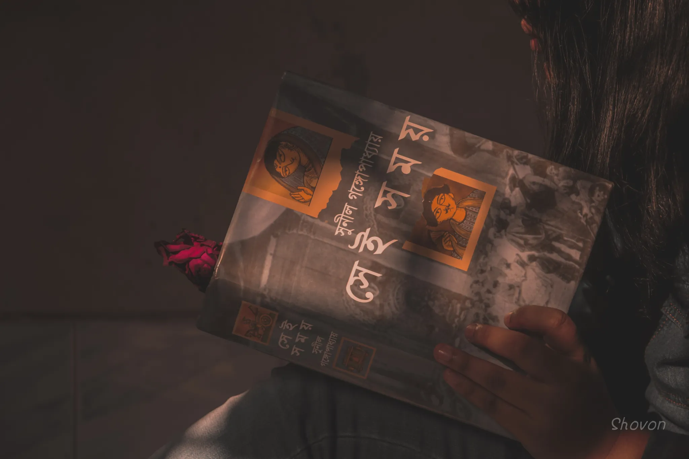
ⓅⒽⓄⓃⒺ ⒸⒶⓂⒺⓇⒶ ⓉⒾⓅⓈ:
°Wipe your camera lens.
°Natural light is always better for your photos.So try to take photos On sunlight. And while you are at that decrease your exposure a bit.
°White background always looks good. If you are into flatlay's try blending different colors.
°Experiment with your phone. Try to see things through your phone lens.
°Don't forget to focus on your subject.
°You can learn a lot from Youtube.
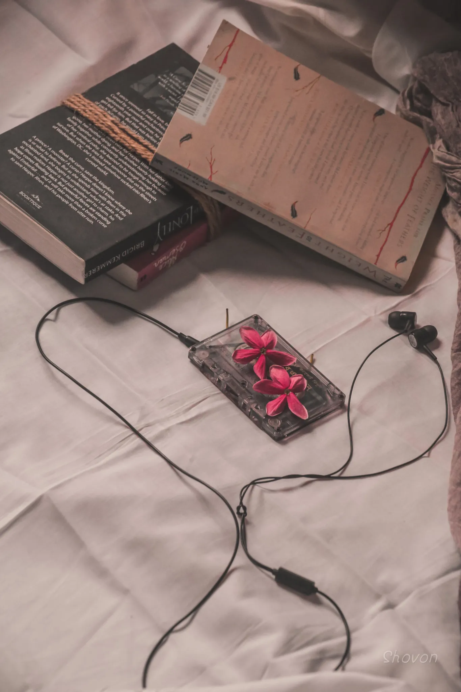
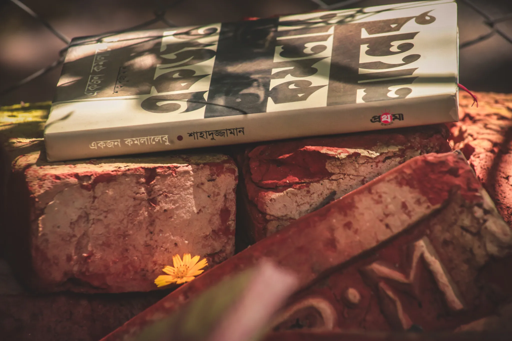
ⒶⒷⓄⓊⓉ ⓂⓎ ⓅⒽⓄⓉⓄⓈ:
When i try to take photos with planning -they don't come out as i would love them to be. But I when I just do that on messes-with less time,no planning -they are actually decent kinds of. So from that I learned one thing-sometimes cameras don't do real Justice. Maybe because the camera eye is different from human eyes. So junk like waste paper specially brown paper looks good on photos,paint brushes after a painting, tree leaf etc.
Random clicks and a bit of editing always makes a huge difference.
App i use to edit my photos
*Lightroom (i do most editing with this)
*picsart(if i want to add photos or texts)
*Vsco(amazing for filters)
*Snapseed.
Have fun clicking. 🌼
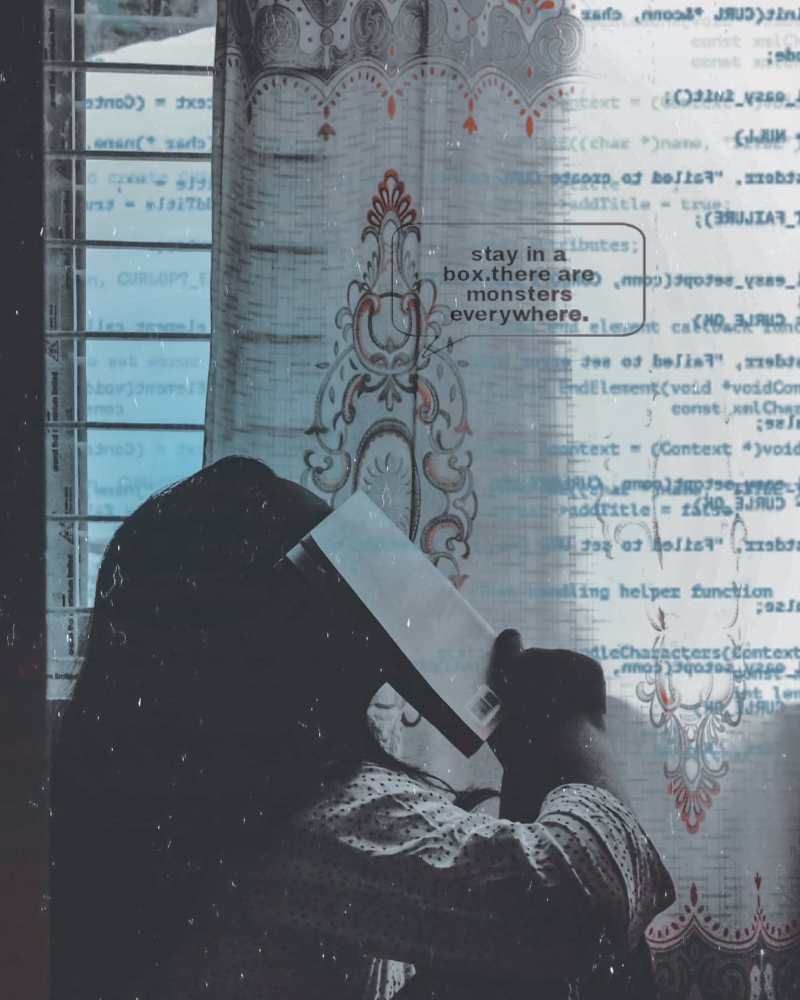
As a woman – i always felt guilt. Not kidding. I live in a small country of Asia. And i was raised by the thought that women will be always less than men. You are on their mercy. Think before you say,see before you walk, don't raise your voice, don't expose yourself-bla bla bla. And the most important and amazing quote of my society' Men will be MEN'. Indirect meaning 'woman'-'girl'-'lady'- that's another specie. Cause normally human indicates men in the eyes of society.
This society has always thought less of a woman. Instead of treating them as human-they treat women as a possession. A weak link- that needs to be protected.
"Don't you understand? I'm a woman. I'm guilty by default. It's always like that. They will say I
asked for it. A smile means I'm flirting. A nice word means I'm asking for it. Revealing clothes
mean I'm inviting touch. That is fact."
-Maybe i have said these lines before. But i wanted to
share again.
i always remember these words. We live in a world where we have a constant reminder that 'Girls are not strong enough.' And in a country like ours!!…
Even if a girl is strong enough to establish a profile in this society on her own-she will be still measured as a girl,not a human. A girl who can be raped-and it's completely her fault. Cause she is not supposed to roam around. She is not supposed to roam alone. It's all her fault. First fault is-she has a vagina. Second-she is a girl. Third -she is a girl…. Hundred-she is a girl.
"A group of youth tied the victim's husband and raped the girl at Sylhet MC college dormitory on Friday night."-Can you imagine this!!She was with her husband, even that didn't buzz the monster. I have no words!Literally nothing.
I always fight with Mom -to let me go out on my own. Let me shop alone -to make my curfew past 5pm. But she never listens!!And time to time i throw my own tantrum. That -i want my independence and all-bla bla bla.
My Mom came to me with the news of Sylhet MC College rape. And said to me in a perfectly calm voice-"you know-when you were born i was so happy that i have a little doll of my own and my first instinct was /is i have to protect you. From everything. I know you don't love me-even you hate me sometimes cause i don't give you everything you deserve as human.But even if i let you -the society won't. And i don't think i can ever change. I would rather take your hate to know that i kept you safe from monsters.Cause the only way i know how to save you. This girl was raped!and even her husband couldn't save her. Our society is not ready for their angles. And i would rather have you hate me then give you what you deserve. Cause that's the only way i can save you from this world.For now atleast."
The worst part was-i couldn't deny her one word. Cause no matter how i think i am strong enough to handle the world -there are thousands to pull me back. Thousands to tell me i am not worth it. This is the society we live-this is the world we are creating.
Someday i feel like everyone would be happy if the women lived in a box-without any sound -letting everyone forgetting their existence.
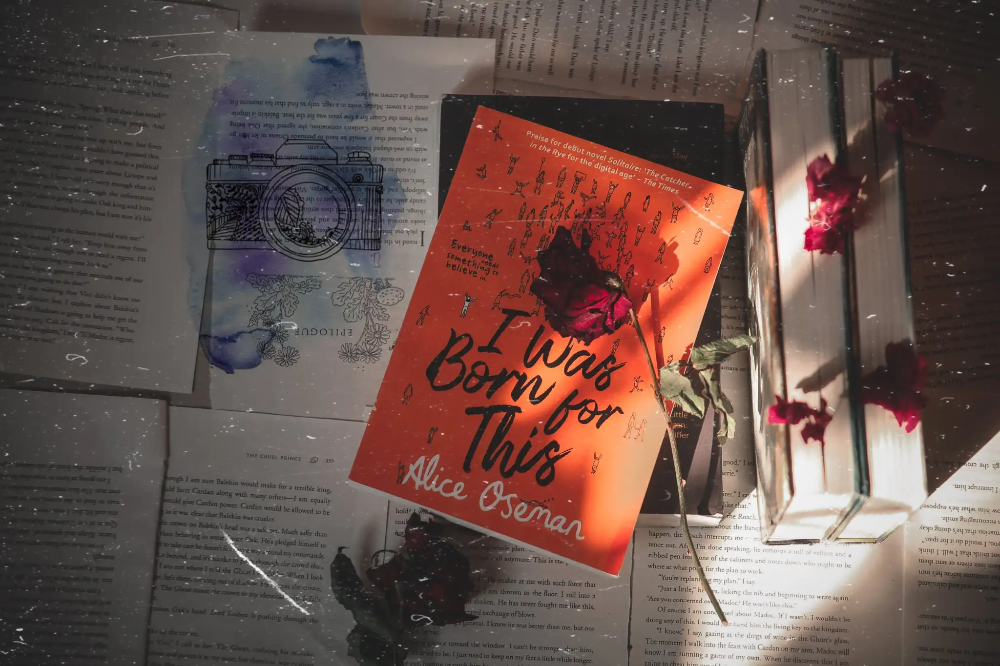
I can't think of a day when i haven't read or touched a book. All i know,all virtues, all thoughts, all the things i know-they are from books. I am a person who loves words-who loves sentences that pouring heart out. So naturally i discovered my happiness in books.Because the books helped me see things differently.Helps me to understand a emotion,any emotion. Teach me to be a better person.
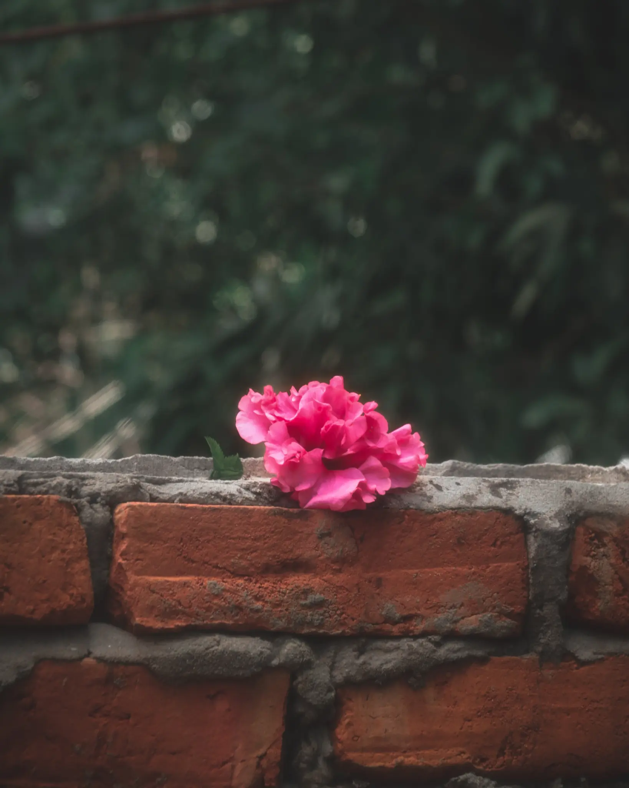
If you ask me -in five years where i want to see myself. There is only two things-own a book/coffee shop and travel around the world soaking every bit of fresh air i can get.
Books give me a free passport to travel around. It's not the same like be in a place physically, but well enough to feed my soul. From my corner of world-it almost seems impossible to do so. For a lot of reasons- invisible chain that tied around everywhere,it almost seems like day dreaming. But books give me a dream,books give me a reason to wake up and think that life is beautiful. It's worth to try to live your dreams. No matter how hard it is,one should never lose hope. One should never let go of dreams.
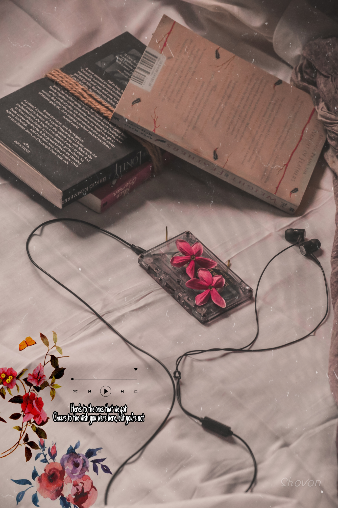
As a kid -i discovered i love taking photos-when i wasted one reel taking nonsense photos. And thanks to Baba, -Maa couldn't scold me much.Now i am an adult and my fascination photos are still intact, i will say it increased more and more over the year.
For me every photo is a memory,a story.
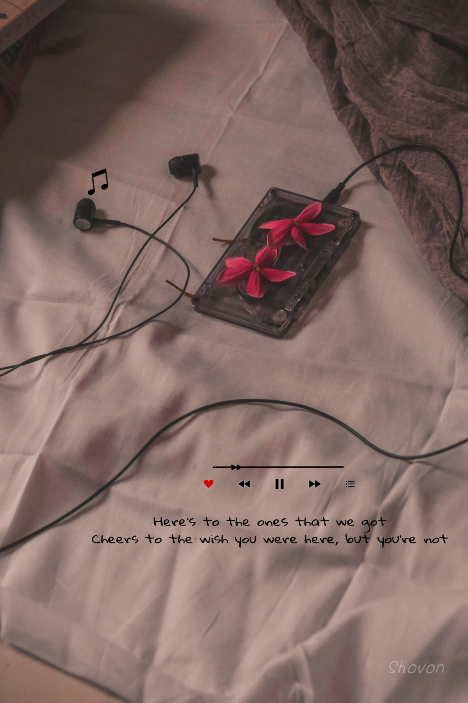
I always felt different. Well,not cause i think i am special or something. You know it when you look around and feel alone in the crowd. I discovered my happiness in books,in shots i take.
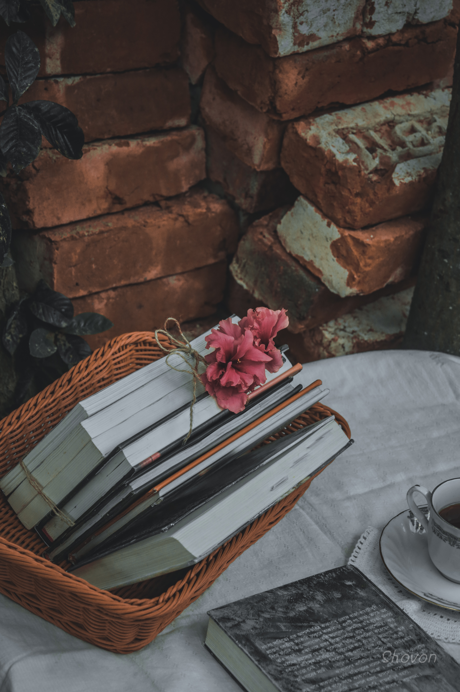
Now that my dreams roam around cliche nerd dreams-i can't stop myself from smiling. I wish i had guts to work toward it. Just doing it. Not thinking about disappointing parents -not doing what i am supposed to do. I realised one thing-i hate disappointing people-specially my parents. And they are doing what they think the best for me. Not the unusual staff. Am i ok with that? HELL NO! But i am not rebelling, that's not me. I wish someday i get close to my dreams.
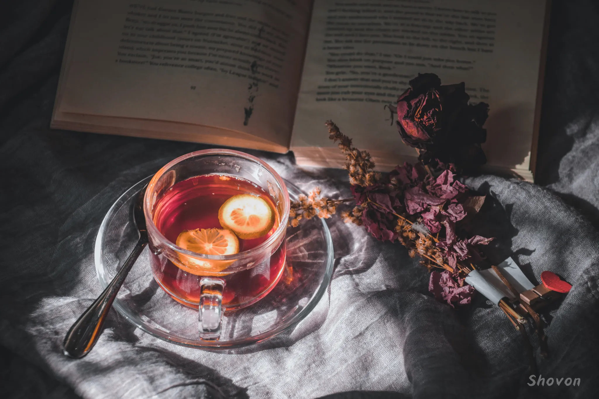
Nowadays it takes courage to open social media or newspaper or any news portal. Eventually when i dare to have a peek-i can't even find words to describe the situation. And in those matter i regret that i was born here-where being a doctor is a cruse-where sharing your thought can be a joke to others-where you need to insult others to be cool-where you will be insulted for your skin tone-where you will be judge by your clothing-where your parents care about society more than you- where people don't give a crap about actual saviours (doctors)-where they want to blame every single things to others -where every situation is a competition . I can go on and on. But i also know people who doesn't give a crap, would never give a crap.
I came across some screenshots on @literary_rebel95 Apu 's story and i just went numb!! A DOCTOR got murdered and some people found a way to appreciate that act!! Bravo!!
When one people tries to find a little bit of light hundreds come to pull him toward the dark. And that's the reality 🙂 These are the people always rule. And the good people always suffers, no matter what.
We all say we need positive vibes- but everywhere we look for that we only see negativity!! The world needs enough space to keep living .. Or the world will die along with us 🥺
✦ Thanks for joining me! ✦
"Good company in a journey makes the way seem shorter."
— Izaak Walton